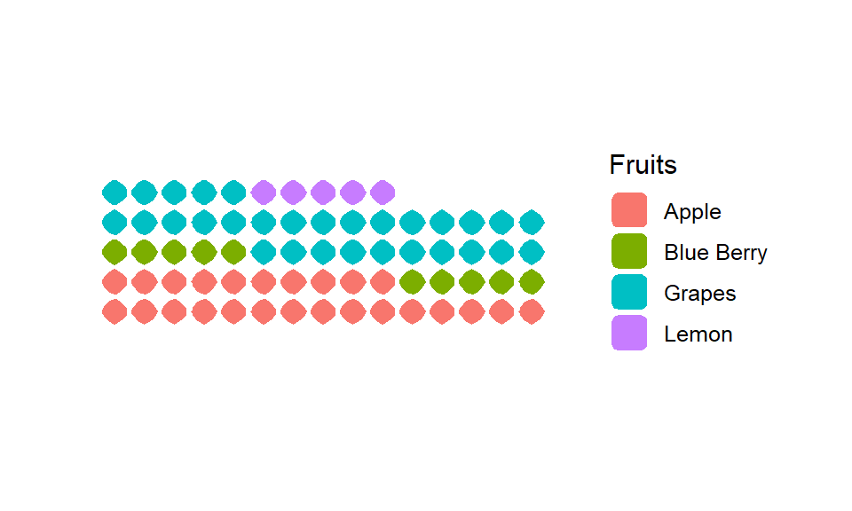

Mirror mirror on the wall who has the awesome plot in the world - Its Waffle Plot!
Is it really important to make the plots look good, readable for clients?
Yes! It’s very important.
We often see a histogram or bar chart in the data visualisation section to interpret data, which is pretty monotonous. So I got around these amazing Waffle plot. Waffle plot looks like waffle hence the name.
To get started we need to install these packages.
Waffle and Hrbrthemes package includes the icon as a square box, which can be customized according to our means. Hrbrthemes can be installed from Github. Extrafont package makes it easier to use fonts other than the basic PostScript fonts that R uses. Fonts that are imported into extrafont can be used with PDF or PostScript output files. And few basic library as “ggplot2”, “dplyr”, “tidyverse” needs to be loaded as well.
install.packages(c("waffle", "extrafont", "Hrbrthemes"))Load all the packages, to set the working environment.
library(tidyverse)
library(ggplot2)
library(extrafont)
library(waffle)
library(hrbrthemes)
library(dplyr)Simplest waffle Plot
This is a simplest usage of a waffle plot. Pluging five values(20,40,10,5,25), with five rows and giving a title “Basic waffle chart”.
waffle(c(20,40,10,5,25), rows = 5, title = "Basic waffle chart", xlab = "1 box equals 1 unit")Data frame
Lets make a data frame as an example to work with. There are four fruits with assigned values and colour.
data.frame(
Fruits = c("Blue Berry", "Lemon", "Apple", "Grapes"),
vals = c(10, 5,25 , 30),
col = c("blue", "green", "red", "magenta")
) -> fruit_df
fruit_df## Fruits vals col
## 1 Blue Berry 10 blue
## 2 Lemon 5 green
## 3 Apple 25 red
## 4 Grapes 30 magentaWe will use this as the base for the following examples.
fruit_data<- fruit_df %>%
count(Fruits, wt = vals) %>% #count the no. of fruits and the values of them
ggplot(aes(fill = Fruits, values = n))+ #making the ggplot, fill by fruits, and values set by the count above
coord_equal() + #keeps the waffle plot box ratio as one
theme_ipsum_rc(grid="") + #omits the grid and
theme_enhance_waffle() # it enhance the plot, omits axis elements from the plotSimple waffle plot
This is plain waffle. It uses the syntax geom_waffle(). It worls similar to waffle(). Flip parameter makes the plot in horizontal position otherwise it would be vertical, n_rows sets the no. of row for the base of plot and size is its size of box.
fruit_data +
geom_waffle(
n_rows = 15, size = 0.33, colour = "white", flip = TRUE
)
Proportional waffle plot
Waffles work best when they are square (makes it easier to compare parts to whole which is the purpose of the chart). Length of x-axis is equal to y-axis. We could do this normalization prior to passing data into geom_waffle() or let it do it for us with the make_proportional parameter.
fruit_data +
geom_waffle(
n_rows = 10, size = 0.33, colour = "white", flip = TRUE,
make_proportional = TRUE
)Adding border colour
The border of tiles can be colored according to your background using the colour parameter.
fruit_data +
geom_waffle(
n_rows = 10, size = 3, colour = "white", make_proportional = TRUE
)Make waffle box into circles
Let us mix things up we can round out the corners by specifying a grid::unit() value to the radius parameter. It brings variety to the graph. This isn’t generally recommended as the goal is to enable quick mental perception for parts to the whole and the rounded corners can delay and/or skew said interpretation.
fruit_data +
geom_waffle(
n_rows = 15, size = 0.5, colour = "white", flip = TRUE, radius = unit(9, "pt")
)Highlighting effect
Here is how we can add a highlighting effect using scale_colour_manual. This is quite handy in persentation / visualisation to point out an important indicator.
fruit_data+
geom_waffle(
aes(colour = Fruits),
n_rows = 10, size = 0.9, make_proportional = TRUE,
radius = unit(7, "pt")
) +
scale_colour_manual(
values = c("black", "white", "black", "white")
)
There is another Waffle plot which includes icons inside, Github page argues that the argument use_glyph can be used to replace the tiles by pictures from the extrafont package. However, I could not get the code to work.
Waffle plot is easy to understand and not monotonous like histogram. Its easy to grab the information from the graph. Its even readable for people who is not from a technical background.